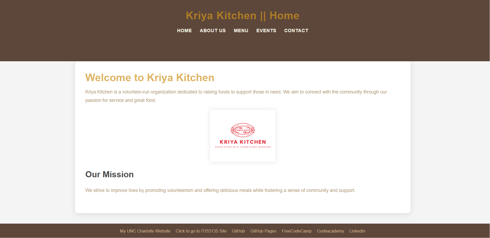

Peer Review: Pedibhotla, Shyam

Kriya Kitchen
- Homepage - Project starts with index.html inside of the clientProject folder instead of projects folder.
- Spaces / upper-cases in file / folder names - Upper case in the folder name, exp: "clientProject." Other than that no spaces or uppercase.
- Design
- Contrast/sizing - Text contrasts well against background. The images as of now are too small to read.
- Color and font using CSS - Project correctly uses .css file, but does not create its own for the project.
- CRAP:
- Contrast - The contrast between the text and the background is good, using a light beige color for the background and dark brown for text and headers.
- Repetition - The color scheme is used across different sections, giving a cohesive look.
- Alignment - The elements such as the logo, navigation menu, and content are aligned vertically, creating order and balance.
- Proximity - Information is grouped logically. This helps users easily understand the flow of information.
- Page Has:
- Header - All pages include a header element within the body.
- Main - All pages include a main element within the body.
- Footer - All pages include a footer element within the body.
- Nav - All pages include working nav bar with adequate spacing between links.
- Header with site/brand and h1 - All pages have a h1 element, but it is in the main. Should be in the header.
- Main with h2 - Main includes h2 element, but the H1 element is also there.
- Footer with user pages - All pages include footer with correct links.
- Specific requirements:
- The page does not create a seperate css file.
- Page has minimum of 5 pages.
- All pages have a working nav bar.
- Reccomendations:
- I would fix the h2 elemet to match with the rest of the page. The color being black throws off the color scheme.